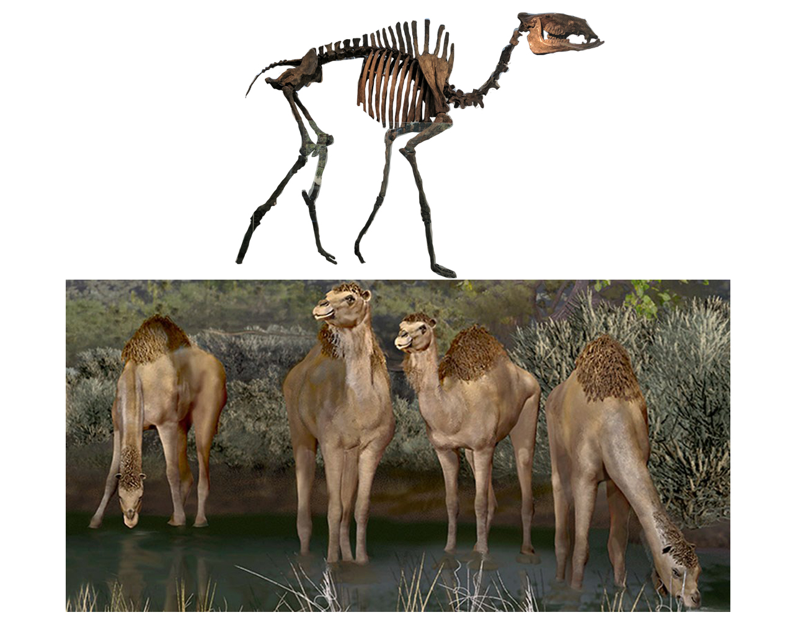
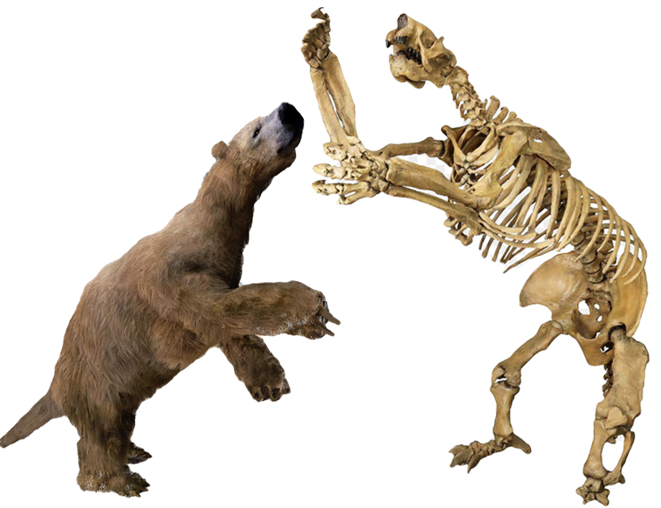
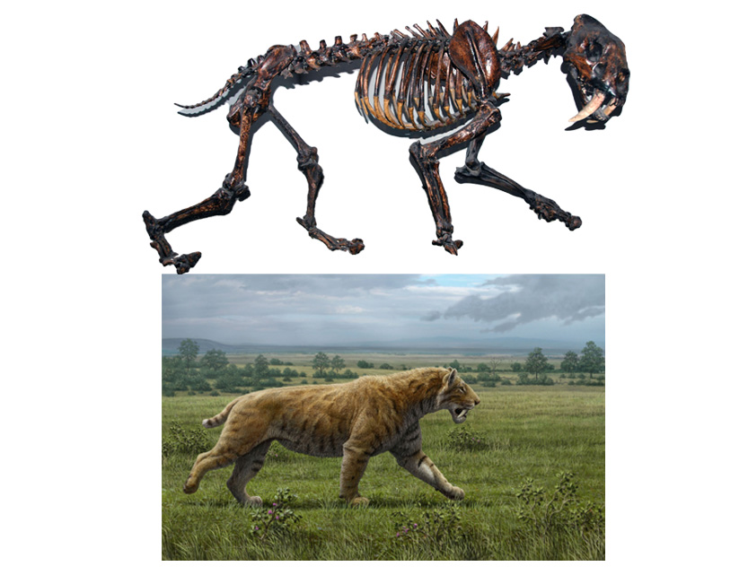

Ice Age Mammals of Texas
What's An Ice Age?
An ice age is a period of colder global temperatures and recurring glacial expansion capable of lasting hundreds of millions of years. Thanks to the efforts of geologist Louis Agassiz and mathematician Milutin Milankovitch, scientists have determined that variations in the Earth’s orbit and shifting plate tectonics spur the waxing and waning of these periods. There have been at least five significant ice ages in Earth’s history, with approximately a dozen epochs of glacial expansion occurring in the past 1 million years. Humans developed significantly during the most recent glaciation period, emerging as the dominant land animal afterward as megafauna such as the wooly mammoth went extinct. Source: History.com. Mammoths, camels, ground sloths, bison, saber-toothed tigers, and dire wolves dominated the North American landscape during the most recent Ice Age, which ended 10,000 years ago. Many fossils of these creatures have been found here in the Lone Star State!Columbian Mammoths
The Columbian Mammoth was so tall a person would need to stand on the second floor of a building to touch its head, and weighed the same as five cars stacked on top of each other. It also boasted large tusks that could easy extend the width of two bicycles laid end to end. Unlike its cousin the Woolly Mammoth. The Columbian Mammoth did not have much fur. North America was generally warmer than the Woolly Mammoth’s homeland of Eurasia. The Columbian mammoth did share some similarities with modern elephants. They may have lived in herds like elephants, as some fossil sites suggest. Based on our knowledge of elephants, the Columbian mammoth might have lived up to 65 years. Both mammoths and elephants also share similar ridged teeth, good for chewing plants. These teeth grew in sets, with new teeth replacing old ones as the animal aged. These ridged teeth were used to grind grasses, brush, trees, and woody plants. Like modern elephants, mammoths would have had to eat a lot of this food each day to fuel their large bodies. Columbian mammoths most likely spent most of their day eating hundreds of pounds of food.
Western Camel
The Camelid family originated in North America 45 million years ago but at least five genera of camels lived in North America during the Ice Age. The 7 foot tall Western Camel was an herbivore adapted well to the open space savannah and dry climate of Waco, Texas. Camelops had a "pacing gate" where their feet moved together on one side at a time, allowing them to have long strides and cover longer distances. Camelops is known from numerous specimens from all over North America. It was about the same size as Old World camels and looked similar to living camels and llamas with a long mobile neck, long legs and feet with two toes each. Camelops lived late enough to have been encountered by the first humans to enter the Americas, and there is direct evidence of hunting and butchering by humans. The authors collected DNA from these bones and compared it to living camels and llamas. They found that, contrary to previous ideas, Camelops is actually much more closely related to Old World camels than it is to South American camels. By their estimates, the Old World camels and Camelops diverged from each other about 12 million years ago, and the two living Old World camels split about five million years ago. Additionally, they found that the South American lineage didn't diversify until after it had arrived on the continent.
Ground Sloth
The Giant Ice Age Sloth,Megalonyx jeffersonii, the famed "Giant Claw" discovered by Thomas Jefferson, stood almost ten feet tall and weighed 2 to 3 tons, as much as a small elephant. It grazed Texas' grasslands during a geologic period called the Pleistocene when huge glaciers of ice covered most of Texas. Sloths were herbivores who used their claws for food gathering, defense, and possibly to climb trees. They became extinct about 9,500 years ago, along with mammoths, giant beavers, camels, and many other large ice age mammals living in Texas. Besides the climate change, early Paleoindians may have hastened the sloth's demise since they would have found the huge, sluggish creature an easy prey. Giant ground sloths were large, lumbering beasts that lived in the Americas during the Ice Age. They were directly related to today's modern sloths. They were also distantly related to anteaters and armadillos.
Saber-Toothed Tiger
Saber-toothed cat, also called sabre-toothed tiger or sabre-toothed lion, any of the extinct catlike carnivores belonging to either the extinct family Nimravidae or the subfamily Machairodontinae of the cat family (Felidae). Named for the pair of elongated bladelike canine teeth in their upper jaw, they are often called sabre-toothed tigers or sabre-toothed lions, although the modern lion and tiger are true cats of the subfamily Felinae. Sabre-toothed cats existed from the Eocene through the Pleistocene Epoch (56 million to 11,700 years ago). According to the fossil record, the Nimravidae were extant from about 37 million to 7 million years ago. Only distantly related to felids, they include the genera Hoplophoneus, Nimravus, Dinictis, and Barbourofelis. The Machairodontinae, extant from about 12 million to less than 10,000 years ago, include the more familiar Smilodon as well as Homotherium and Meganteron. Sabre-toothed cats roamed North America and Europe throughout the Miocene and Pliocene epochs (23 million to 2.6 million years ago). By Pliocene times, they had spread to Asia and Africa. During the Pleistocene, sabre-toothed cats were also present in South America.